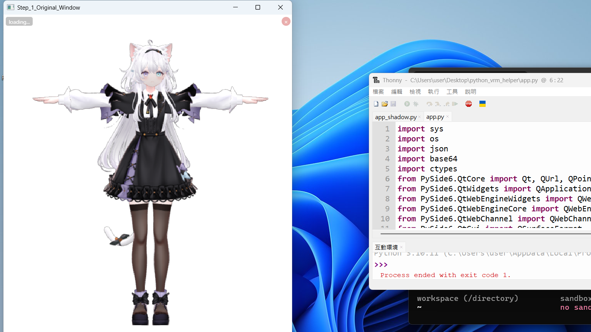
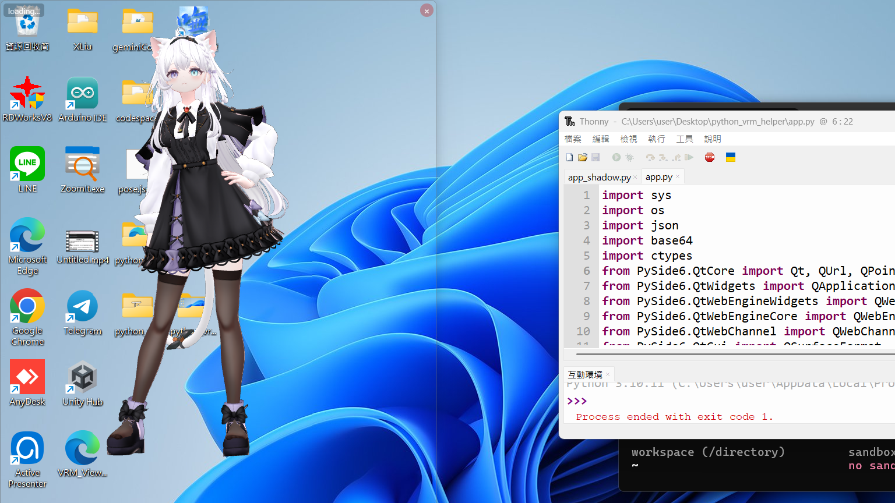

首先，我們要建立一個能在桌面上「消失」的視窗。右圖展示了未處理前的狀態：帶有標題列與實體邊框。
這需要使用 PySide6 設定 FramelessWindowHint 與 WA_TranslucentBackground 來消除它們。
fmt = QSurfaceFormat() fmt.setAlphaBufferSize(8) QSurfaceFormat.setDefaultFormat(fmt)

從零開始打造一個透明、互動、有物理感的 VRM 角色
首先，我們要建立一個能在桌面上「消失」的視窗。右圖展示了未處理前的狀態：帶有標題列與實體邊框。
這需要使用 PySide6 設定 FramelessWindowHint 與 WA_TranslucentBackground 來消除它們。
fmt = QSurfaceFormat() fmt.setAlphaBufferSize(8) QSurfaceFormat.setDefaultFormat(fmt)

即便開啟了透明，Windows 依然會給視窗留下一圈淡灰色的陰影（如右圖所示）。
我們需要透過 ctypes 呼叫 user32.dll 來暴力移除 CS_DROPSHADOW，達成真正的無痕效果。

讓角色盯著你的游標看！我們直接操作 VRM 的 head 骨骼，並計算滑鼠與角色的相對角度。
教學重點： 套用姿勢時需排除 head 骨骼，並加入 lerp 平滑處理，避免轉頭太過生硬。

透過 QWebChannel 搭建 Python 與 JS 的通訊橋樑。雙擊滑鼠時，JS 通知 Python，Python 讀取新的 JSON 姿態並推送到前端。
教學重點： 處理 JSON 時使用 json.dumps 確保特殊字元正確跳脫。

使用者可以使用滾輪縮放角色，視窗會自動連動調整大小，並始終保留 10% 的緩衝空間，確保動作不會「破圖」。
教學重點： 動態計算 3D Bounding Box 並同步更新 fitWindowToModel 函式。